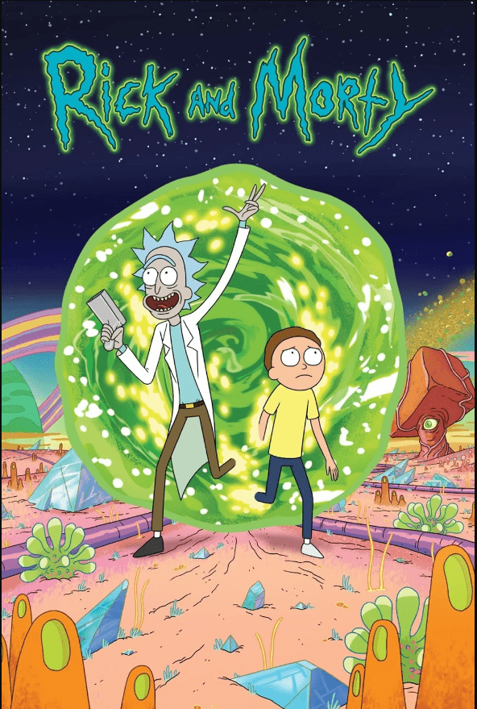

Ben kimim?
Merhaba! Ben Ahmet Melih Ulusoy, bilgisayar mühendisliği öğrencisi. Teknolojiye olan tutkumun yanı sıra, yaşamın sunduğu güzellikleri keşfetmeyi de seviyorum. Her gün yeni şeyler öğrenmek ve farklı deneyimler yaşamak benim için önemli. Doğa, spor, dizi ve oyun dünyası gibi birçok alanda kendimi ifade ediyor ve bu alanlarda keyif alıyorum.
Doğa ve Spor
Doğa yürüyüşleri yapmayı ve yüzmeyi çok seviyorum. Doğayla iç içe olmak, zihnimi dinlendirmemi sağlıyor ve enerjimi yeniliyor. Özellikle hafta sonları doğa yürüyüşleri yapmak, yeni yerler keşfetmek benim için harika bir deneyim. Bu yürüyüşler sırasında doğanın sunduğu güzellikleri görmek, kuşların cıvıltısını dinlemek ve taze havayı içime çekmek bana büyük bir huzur veriyor. Farklı bitki örtülerini ve manzaraları keşfetmek, her seferinde yeni bir macera yaşıyormuşum gibi hissettiriyor. Ayrıca, yürüyüş yaptığım yerlerin çoğu genellikle sakin ve doğa ile dolu olduğundan, şehir hayatının gürültüsünden uzaklaşmak ve gerçek anlamda dinlenmek için mükemmel bir fırsat sunuyor.
Yüzme ise benim için sadece bir spor değil, aynı zamanda ruhsal bir terapi. Suya girdiğimde hissettiğim özgürlük ve hafiflik, tüm stresimi alıyor. Yüzme, kaslarımı çalıştırmanın yanı sıra zihnimi de boşaltmamı sağlıyor. Özellikle yaz aylarında deniz kenarında geçirilen zaman, güneşin sıcak ışınları altında yüzmek, kendimi çok daha canlı hissettiriyor. Yüzme sırasında suyun serinliğiyle birleşen güneşin sıcaklığı, her defasında bana doğanın ne kadar muazzam olduğunu hatırlatıyor.
Bu iki aktiviteyi birleştirdiğimde, doğanın içinde hem fiziksel hem de ruhsal olarak yenilenmiş hissediyorum. Hafta sonlarımı doğa yürüyüşleri ve yüzme ile doldurmak, benim için bir yaşam tarzı haline geldi. Yeni yerler keşfederken, arkadaşlarımla veya ailemle geçirdiğim anlar da bu deneyimi daha da özel kılıyor. Doğanın güzellikleri arasında geçirilen zaman, insanın kendini bulmasına ve yenilemesine yardımcı oluyor. Böylece hem bedensel sağlığımı koruyorum hem de ruhsal olarak kendimi daha dengeli hissediyorum.
Film ve Oyun Tutkusu
Dizi ve film izlemek, benim için bir tür kaçış ve eğlence kaynağı. Farklı dünyalara dalmak ve hikayeleri keşfetmek, hayal gücümü geliştiriyor. Bilgisayar oyunları da bu anlamda bir tutku. Oyun oynamak, strateji geliştirmemi ve analitik düşünmemi sağlıyor. En sevdiğim dizi ve filmler arasında Rick And Morty, The Lord of the Rings ve Breaking Bad bulunuyor hatta en sevdiğim dizinin görselini ve kısa bir introsunu alta ekliyorum. Oyunlara gelince, Europa Universalis IV, Hearts of Iron IV ve Red Dead Redemption 2 favorilerim arasında. Ayrıca en sevdiğim müzik grubunu da navigation bar kısmına ekliyorum tıklayıp gidebilirsin.
Şimdiye Kadar Neler Yaptım?
Şu ana kadar kariyer yolculuğumda birçok değerli deneyim elde ettim. Üç farklı yerde staj yapma fırsatım oldu: Hayat Kimsa San. A.Ş.İzmit Belediyesi ve Bimser Çözüm. Bu köklü ve prestijli şirketlerde çalışma imkanı bulmak, benim için son derece öğretici ve gelişim dolu bir deneyim oldu.
Bu stajlar, teknik becerilerimin yanı sıra profesyonel yaşamda edindiğim deneyimlerin de büyük katkı sağladı. Çalıştığım projeler sayesinde gerçek dünya problemleriyle başa çıkma becerilerimi geliştirdim.
Kariyer hedefim ise veri bilimi ve makine öğrenmesi alanında ilerlemek. Bu alanda derinleşmek için sürekli olarak kendimi geliştirmeye çalışıyorum. Özellikle HTML ve Python, konusunda bilgi ve becerilerimi artırmak için çeşitli kaynaklardan faydalanıyorum.
Gelecekte bu hedeflerime ulaşarak, teknolojinin sunduğu fırsatları en iyi şekilde değerlendirmek ve yenilikçi çözümler üretmek için sabırsızlanıyorum.
İletişim
Bana ulaşmak için melihu4832@gmail.com üzerinden iletişim kurabilirsiniz.